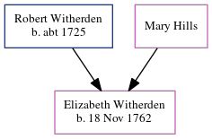

Elizabeth Witherden 1762 -
[ Home ] | [ Calendar ] | [ Surnames Index ] | [ Census Index ] | [ Family History ]The child of Robert Witherden and Mary Hills, Elizabeth Witherden, the five times great-aunt of Nigel Horne, was born on Nov 18, 1762 and baptized in St Peters, Thanet, Kent, England on Dec 9, 1762.
Parents
- Robert was born c. 1725
Media
England Births & Baptisms 1538-1975 - R_941834590
Kent, Canterbury Archdeaconry baptisms 1538-1912 - GBPRS/CANT/B/96344933
Family Tree
Generated by ged2site. Last updated on Jun 11, 2024